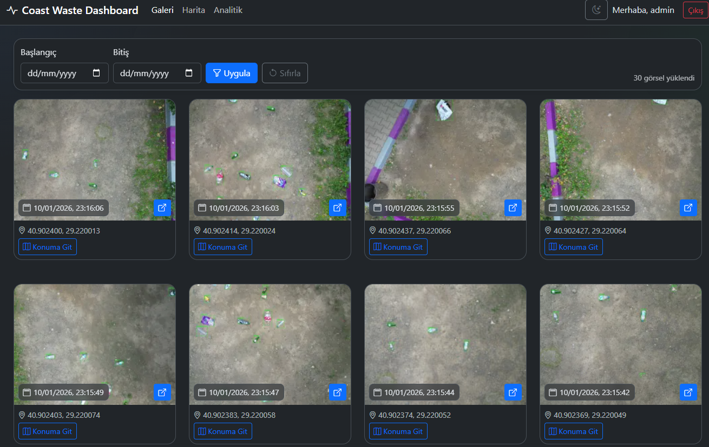
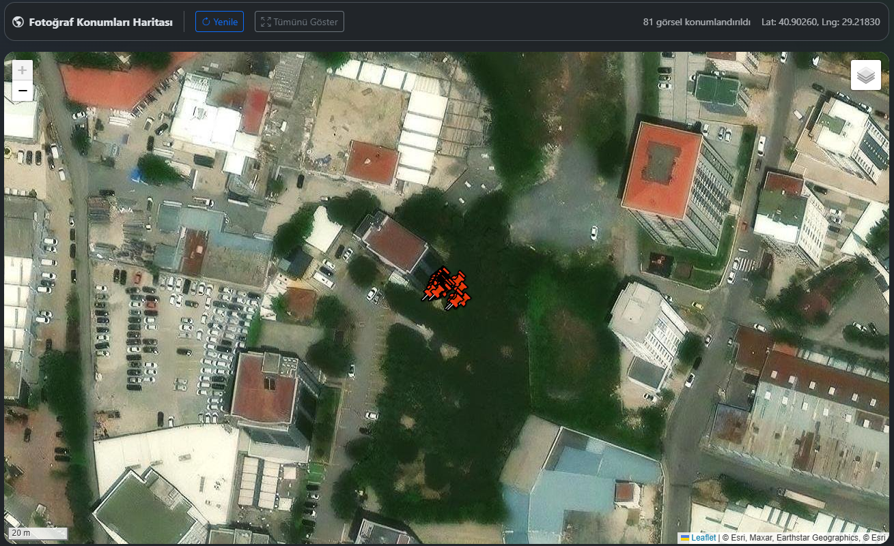
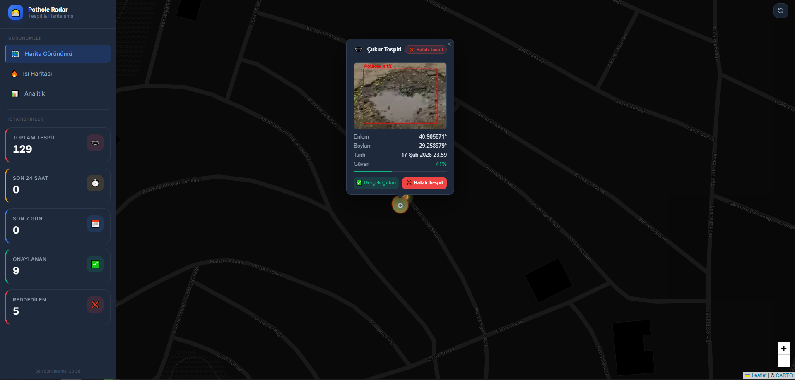
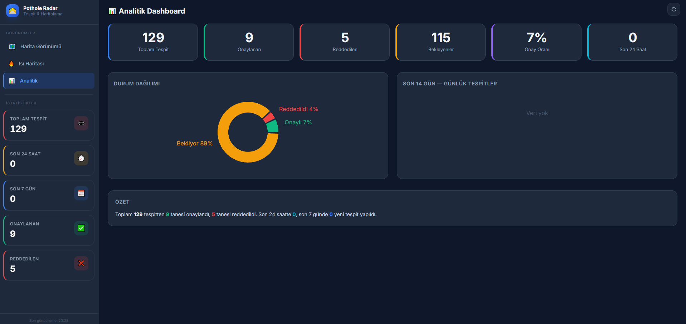

Detaylı
dokümantasyon, bitirme tezleri ve kişisel girişi
Bu çalışma, kıyı şeritlerinde biriken plastik atıkların tespiti ve haritalanması
için düşük maliyetli, insansız hava araçları (İHA) tabanlı, verimli bir sistem
geliştirmeyi amaçlamaktadır. Çalışmanın temel yeniliği, drone'dan elde edilen video
akışı ile uçuş telemetri verilerini milisaniye hassasiyetinde eşleştiren 'Video-Log
Senkronizasyon Modülü'dür. Bu modül sayesinde atıklar coğrafi koordinatlarıyla
etiketlenerek, ASP.NET Core MVC tabanlı bir arayüz üzerinden yoğunluk haritalarına
dönüştürülmektedir. YOLOv12 derin öğrenme mimarisi kullanılarak yapılan testlerde,
karmaşık zeminlerde küçük atıkların yüksek doğrulukla tespit edildiği
gözlemlenmiştir.
Problem Tanımı
Mevcut kıyı temizliği ve izleme süreçlerinde yaşanan temel kısıtlar
şunlardır:
• Ölçeklenebilirlik: Manuel yöntemlerle geniş
sahil şeritlerinin taranması iş gücü açısından sürdürülebilir değildir.
•
Veri Eksikliği: Atıkların birikim noktalarına dair sistematik ve
dijital bir veri tabanı bulunmamaktadır.
• Donanım
Kısıtları: Mevcut İHA çözümlerinde görüntü işleme drone üzerinde
yapıldığında (onboard), yüksek güç tüketimi nedeniyle uçuş süreleri oldukça kısıtlı
kalmaktadır.
• Konumlandırma Hassasiyeti: Sadece video
kaydı alan sistemlerde, tespit edilen atığın 'nerede' olduğu (coğrafi koordinatı)
belirlenememektedir.
Probleme Çözüm
Proje, bu kısıtları aşmak için 'Offboard' (Yer İstasyonu Tabanlı) bir mimari
önermektedir. Önerilen çözümün temel unsurları şunlardır:
• Verimli
Mimari: Drone sadece veri toplayıcı ('uçan göz') olarak kullanılırken,
görüntü işleme gücü yerdeki istasyona aktarılarak İHA'nın operasyonel verimliliği
artırılmıştır.
• Yüksek Performanslı Algoritma: Küçük
nesnelerin tespiti için optimize edilmiş YOLOv12 mimarisi kullanılarak yüksek
doğruluk (mAP50: 0.783) sağlanmıştır.
• Otomatik Konum
Senkronizasyonu: 'Video-Log Senkronizasyon Modülü' ile atık tespitleri,
drone'un anlık GPS verileriyle eşleştirilerek dijital haritalara
işlenmiştir.
• Karar Destek Sistemi: ASP.NET Core MVC
tabanlı web dashboard ve interaktif ısı haritaları ile temizlik ekiplerinin kirlilik
yoğunluk noktalarına göre kaynaklarını optimize etmesi sağlanmıştır.
ETSC-26
Konferansı
Sunum Yapıldı & Dergi Makalesi
Açık Kaynak
GitHub Deposu

YOLOv12 Atık Tespit - Görsel 1

YOLOv12 Atık Tespit - Görsel 2
Pothole Radar, yol çukurlarını tespit etmek ve haritalamak için geliştirilen bir
sistemdir. Hem video + GPS verisini işleyip otomatik tespit yapan bir Python modülü
hem de sonuçları interaktif bir harita üzerinden gösteren bir React dashboard
içerir.
Problem Tanımı
• Şehir yollarındaki çukurlar, araç güvenliği, konforu ve altyapı maliyetleri
açısından önemli bir risk oluşturur.
• Geleneksel yöntemlerle manuel yol
incelemesi yavaş, maliyetli ve verimsizdir.
• Bu projede amaç, çukur
tespitini otomatikleştirerek gerçek zamanlı/sonrası analizler sağlamak ve tespitleri
coğrafi olarak görselleştirmektir.
Yöntem ve Çözüm
• Video kaydından çukur adayı nesne tespiti için YOLO tabanlı bir model
kullanılır.
• GPS verisi, NMEA $GNRMC formatından parse edilerek her tespit
için en yakın koordinat bulunur.
• Filtreleme ile aynı çukurun tekrarları
engellenir, güven skoru eşiklenir.
• Tespit edilen çukurlar Supabase
veritabanına kaydedilir.
• React + Leaflet tabanlı dashboard, Supabase’den
gelen veriyi alır, haritada marker ve ısı haritası olarak sunar.
•
Kullanıcılar, çukur konumlarını, güven skorlarını ve zaman bilgilerini web
arayüzünde kolayca inceleyebilir.
Açık Kaynak
GitHub Deposu

Pothole Radar Dashboard - Görsel 1

Pothole Radar Dashboard - Görsel 2
Konveyör bant üzerindeki atıklar YOLOv8s-cls modeliyle kamera görüntüsünden
sınıflandırılır; plastik, cam ve metal tespitleri seri port üzerinden Arduino'ya
aktarılarak servo motorlarla ilgili kutulara yönlendirilir. Sensör geri bildirimleri
ROS2 tabanlı dijital ikiz aracılığıyla gerçek dünya verileriyle karşılaştırılıp
sistem doğruluğu izlenir.
Problem Tanımı
Kentsel atık yönetiminde plastik, cam ve metal gibi geri dönüştürülebilir
malzemelerin manuel ayrıştırılması hem yavaş hem de insan hatasına açıktır. Bu
çalışmada, konveyör bant üzerinde hareket eden atıkları gerçek zamanlı olarak
sınıflandırıp fiziksel olarak ayrıştıran otomatik bir sistem geliştirilmiştir.
Yöntem ve Çözüm
PC tarafında çalışan YOLOv8s-cls modeli (best.pt), USB kameradan alınan görüntü
karelerini anlık olarak analiz eder; %70 güven eşiğini geçen plastik, cam ve metal
tespitlerini seri port üzerinden Arduino Uno'ya iletir. Arduino, atığın kamera
noktasından ilgili servoya ulaşma süresini hesaba katarak belirli bir gecikmenin
ardından MG996R servo motorları 135°'den 180°'ye döndürür ve atığı doğru kutuya
yönlendirir. Düşüşler MZ80 IR ve HC-SR04 ultrasonik sensörlerle doğrulanır; organik
ve kâğıt gibi geri dönüştürülemeyen sınıflar sistem tarafından otomatik olarak
geçilir. Eş zamanlı olarak ROS2 üzerinden çalışan dijital ikiz bileşeni, model
tahminlerini sensör onaylarıyla karşılaştırarak sayım tutarsızlıklarını tespit eder
ve sistem güvenilirliğini izler.
Açık Kaynak
GitHub Deposu
Bu projede kızılötesi (IR) haberleşme sistemlerinin çalışma prensipleri incelenmiş,
gerçek IR kumanda sinyalleri yakalanarak analiz edilmiş ve aynı sinyaller
mikrodenetleyici aracılığıyla yeniden üretilmiştir. Çalışma kapsamında IR iletişimin
temel yapısı ve replay (tekrar oynatma) saldırılarının uygulanabilirliği
araştırılmıştır.
Problem Tanımı
Klasik IR haberleşme sistemlerinde gönderilen komutlar genellikle şifreleme veya
kimlik doğrulama mekanizması içermemektedir. Bu durum, geçerli bir IR sinyalinin
kaydedilip daha sonra tekrar gönderilerek sistemin yanıltılabilmesine neden
olmaktadır. Bu projede, IR sinyallerinin kopyalanabilirliği ve replay saldırılarına
karşı zafiyetleri incelenmiştir.
Yöntem ve Çözüm
IR alıcı modülü kullanılarak gerçek kumanda sinyalleri yakalanmış ve logic analyzer
yardımıyla zamanlama bilgileri analiz edilmiştir. Elde edilen darbe süreleri
mikrodenetleyici üzerinde yeniden oluşturularak IR LED üzerinden hedef cihaza
gönderilmiştir. Orijinal ve yeniden üretilen sinyaller karşılaştırılarak replay
yönteminin çalışma prensibi değerlendirilmiştir.
Açık Kaynak
GitHub Deposu
Bu proje, otonom labirent çözme yetenekli uzaktan kumandalı tank uygulamasının iki
farklı donanım versiyonunu içerir: PIC16F877A tabanlı gömülü sistem versiyonu ve
Arduino Mega2560 Pro tabanlı C++/Arduino versiyonu. Her iki versiyon da Bluetooth
ile joystick/gamepad komutlarını alıp palet motorları, servo kule/namlu ve ek
aksiyonları (lazer, ateş, sinyal, fener, korna) kontrol etmeye odaklanır.
Problem Tanımı
• Farklı mikrodenetleyicilerde aynı tank kontrol mantığını
çalıştırmak.
• PIC16F877A için CCS C tabanlı gömülü kod ile Mega2560 için
Arduino kodu arasında işlevsel uyum sağlamak.
• Kablosuz kumanda verisini
doğru okumak ve gerçek zamanlı motor/servo kontrolü yapmak.
• Engelden kaçma
ve temel akıllı davranışları her iki platformda da desteklemek.
Yöntem ve Çözüm
• PIC16F877A versiyonunda HC-06 Bluetooth ile seri okuma, port çıkışları ve PWM
ile servo/palet kontrolü yapılır.
• Arduino Mega2560 versiyonunda Arduino
framework’ü üzerinden joystick komutları işlenir ve motor/servo çıkışları
düzenlenir.
• Her iki versiyonda da palet motorları için ileri/geri
kontrolü, servo ile kule ve namlu yönlendirme, engel algılamada durma ve geri kaçma
ile LED/sinyal/fener/lazer/korna/ateş işlevleri yer alır.
Açık Kaynak
GitHub Deposu
Bu proje, C# konsol uygulaması olarak hazırlanmış bir Etkinlik Yönetim Sistemidir.
Katılımcı ve organizasyon hesaplarının yönetimini, etkinlik planlama süreçlerini ve
kayıt işlemlerini tek bir platformda birleştirir.
Problem Tanımı
Organizasyonlar etkinlik oluşturup yönetmek, katılımcılar da bu etkinliklere
kaydolmak veya kayıtlarını kolayca iptal etmek istemektedir. Konsol ortamında
verimli, hatasız ve nesne yönelimli bir veri yönetimi sağlanması hedeflenmiştir.
Yöntem ve Özellikler
• Katılımcı ve organizasyon hesabı ile güvenli giriş altyapısı.
•
Etkinlik listeleme, kayıt olma, kayıt iptal etme, yeni etkinlik oluşturma ve
silme.
• Nesne Yönelimli Programlama (OOP) prensipleri ve try-catch blokları
ile kararlı hata yönetimi.
Açık Kaynak
GitHub Deposu
Event System
C# Konsol
Uygulaması